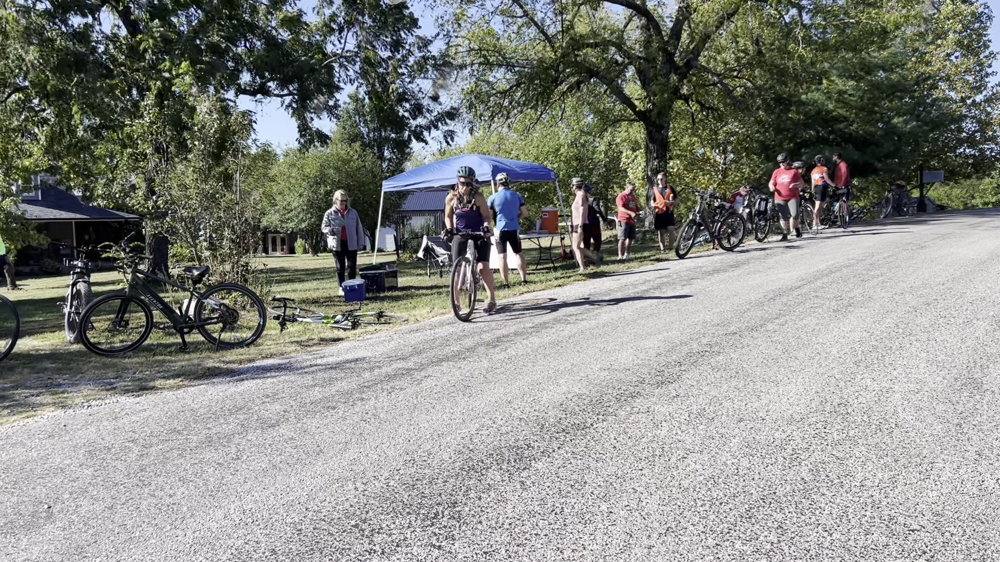
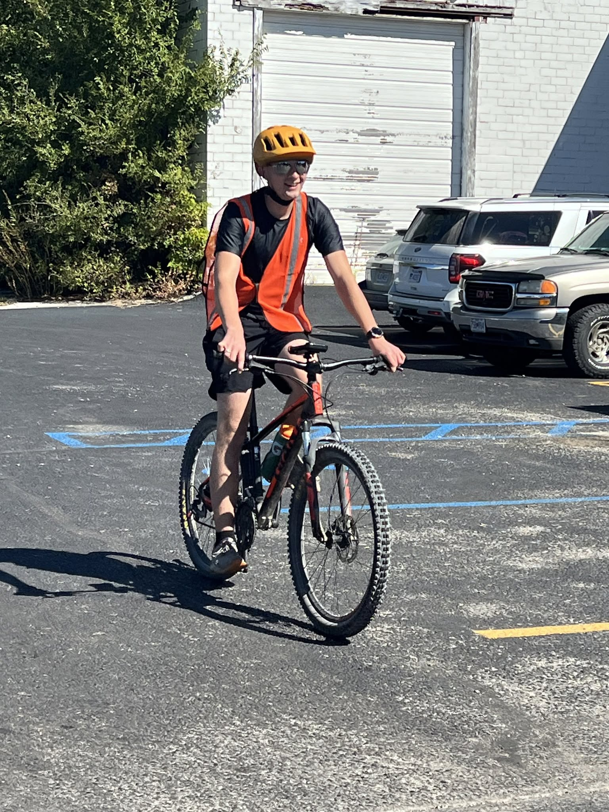
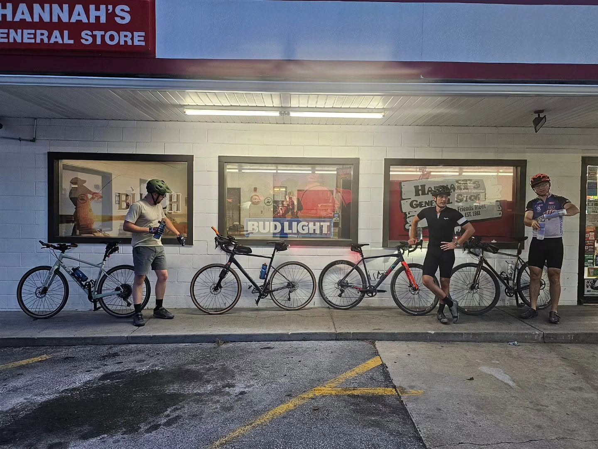

About the club
Small club. Big trail energy.
PoCo Cycling is a nonprofit cycling club based in Bolivar, Missouri. We’re growing from a handful of dedicated riders into a welcoming home for anyone who believes life gets better on two wheels.
Who we are
Polk County Cycling Club — branded PoCo Cycling — exists to bring cyclists together. Whether you’re rolling a hybrid on the Highline or training for The Country Miler, you belong here.
Our president, Kyndle Katzer, and a small crew of volunteers keep rides, trail care, and our annual fundraiser moving forward. We’re intentionally starting small so every new member feels known.
Our vision
We want Polk County to be a place where cycling is normal: kids on the trail after school, tourists planning weekends around the Frisco Highline, and neighbors meeting at the coffee shop before a Saturday spin.
- More riders of every age and pace
- A thriving Frisco Highline culture
- A sustainable annual fundraiser that does real good
- Strong ties with local government and businesses
City partnership
We partner with the City of Bolivar to promote cycling infrastructure and tourism. PoCo Cycling is a main driver helping the city promote cycling — advocating for safer streets, clearer wayfinding to the Highline, and events that invite visitors to discover Polk County by bike.
Better bike infrastructure isn’t just for “serious” cyclists — it’s for families, commuters, and anyone who wants a healthier, more connected town. For trailheads, parks, and recreation info, visit City of Bolivar Parks & Recreation.
Growing with care
We’re not trying to become a megaclub overnight. We’re building habits: regular rides, clear communication, and a culture of encouragement. If that sounds like your kind of club, say hello.
Our people
Weeknight spins, youth riders, dusk selfies, and general-store pit stops — this is PoCo.



